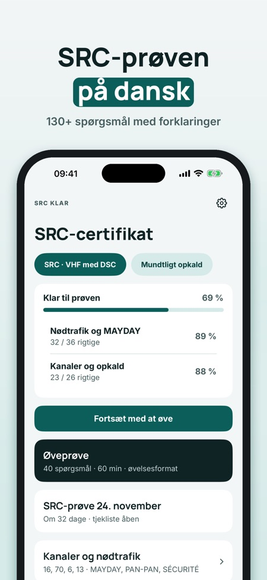
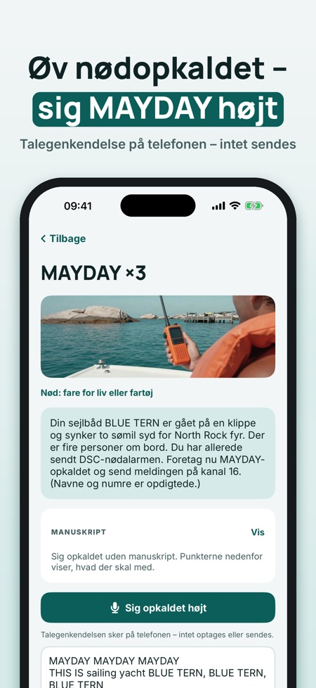
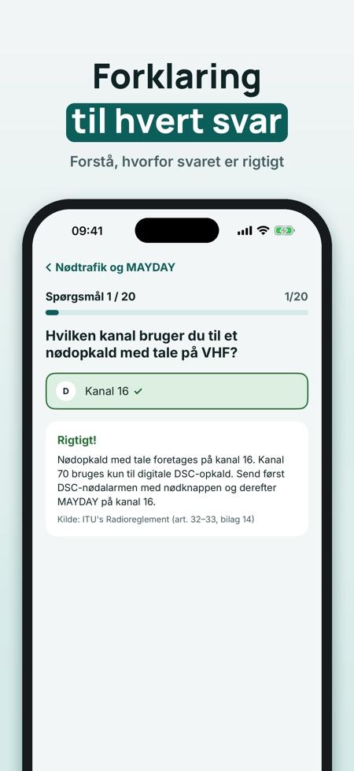

Øv til SRC-prøven og nødopkald. Øv til SRC-prøven: spørgsmål med forklaring, prøveeksamen, VHF-kanaler og nødopkald, du siger højt – på dansk og uden internet.



SRC Klar hjælper dig med at øve til SRC-certifikatet for VHF med DSC – med opkaldsprocedurer, du øver med stemmen.
Du kan øve 20 spørgsmål, tage én hel prøveeksamen og bruge ordlisten og tjeklisten uden køb. Den fulde version er et engangskøb, der låser alle spørgsmål, prøveeksamener og opkaldsøvelser med stemmen op. Intet abonnement.
SRC Klar er uafhængig og ikke tilknyttet Søfartsstyrelsen eller nogen prøveudbyder. Prøven tager du hos en kursusudbyder.